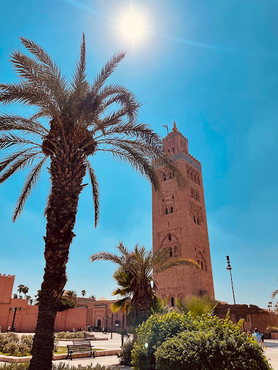
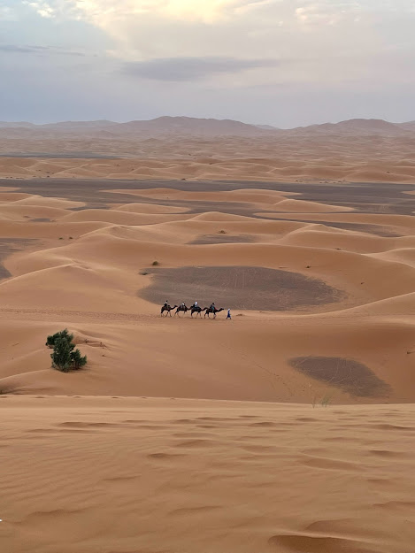

Welcome To Camello Loco
El Maghreb es el oriente próximo, la parte mas occidental del mundo árabe, abarca desde la asombrosa Argelia hasta el histórico Marruecos.
Estos son los destinos que te van a enamorar de la región del Maghreb:
Marrakech
Esta ciudad va a romper todas tus expectativas, una vez que entres a La Medina vas a sentir mil sensaciones nuevas, historia y cultura marroquí en su máximo esplendor.
Tánger

Ciudades misteriosas si las hay, cada pasillo, cada calle es una historia nueva por contar, con sus playas podes visitar la cueva de Hércules, también disfrutar de un buen Té de menta en el café Baba como lo hicieron los Rolling Stones.
Desierto del Sahara
Adéntrese en un viaje por el desierto más grande del mundo en una caravana y pasa la noche en el desierto junto a una tribu bereber quienes te brindaran su comida tradicional, su música y una noche bajo el cielo mas estrellado del mundo.
Garganta de Dades
La garganta del diablo traducido al español es una de las mejores vistas del mundo, localizado en el Alto Atlas es uno de los destinos más fabulosos debido a su gran paisaje y lo bello que es el camino que lo acompaña.
*El precio hacia Garganta de Dades es partiendo desde Marrakech.